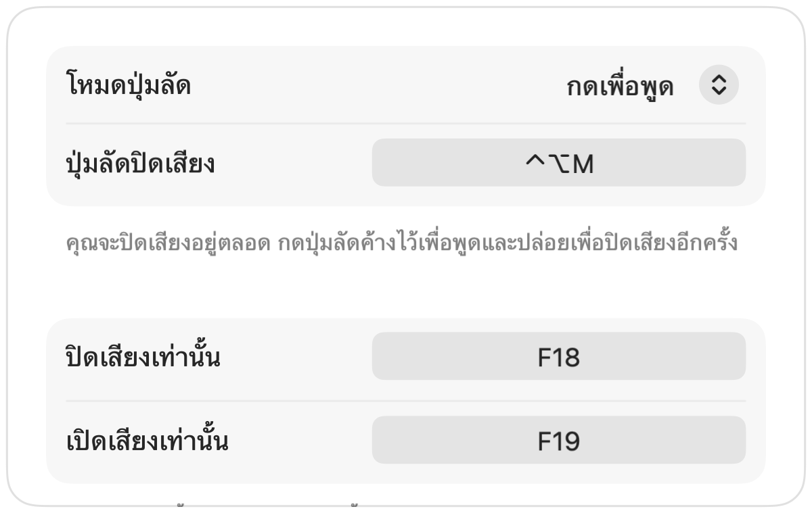

ฟังก์ชันกดเพื่อพูด Push to Talk บน Mac ในทุกแอป
ฟังก์ชันกดเพื่อพูดช่วยให้คุณปิดไมค์อยู่ตลอดเวลาจนกว่าจะกดปุ่มค้างไว้ เป็นวิธีที่ง่ายที่สุดในการตัดเสียงรบกวนในการประชุมใหญ่หรือห้องที่มีเสียงดัง แต่มีเพียงไม่กี่แอปที่รองรับ และแต่ละแอปก็ใช้ปุ่มที่แตกต่างกัน
Muffle เพิ่มระบบกดเพื่อพูดให้กับทุกแอปบน Mac ของคุณ เลือก กดเพื่อพูด ในการตั้งค่า กดปุ่มลัดค้างไว้เพื่อพูด และปล่อยเพื่อปิดเสียงอีกครั้ง
วิธีใช้ฟังก์ชันกดเพื่อพูด
- 1
ติดตั้ง Muffle
- 2
ในการตั้งค่า Muffle ให้ตั้งค่าโหมดปุ่มลัดเป็น “กดเพื่อพูด”
- 3
กด Control-Option-M ค้างไว้ขณะพูด
- 4
ปล่อยมือ แล้วคุณจะกลับมาปิดเสียงอีกครั้ง

- หากต้องการใช้แป้นเดี่ยว สามารถตั้งค่าปุ่มพูดในการตั้งค่าได้ ไม่ว่าจะเป็น ⌥ ขวา, fn หรือปุ่มเมาส์เพิ่มเติม
- เลือกปุ่มลัดที่คุณถนัดในการตั้งค่า Muffle เช่น แป้นตระกูล F
คำถามที่พบบ่อย
ฟังก์ชันกดเพื่อพูดใช้งานใน Google Meet ได้หรือไม่
ได้แน่นอน Muffle ปิดเสียงไมโครโฟนโดยตรง ดังนั้นฟังก์ชันกดเพื่อพูดจึงใช้งานได้ทั้งใน Meet, Zoom, Teams, Discord และแอปอื่นๆ ทั้งหมด
มีฟังก์ชันกดเพื่อปิดเสียงชั่วคราวหรือไม่
ได้แน่นอน เลือก “กดเพื่อปิดเสียง” แล้วกดปุ่มลัดค้างไว้เพื่อปิดเสียงชั่วขณะ เช่น เมื่อต้องการไอ